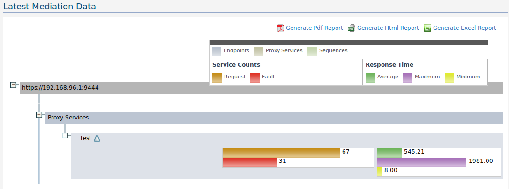
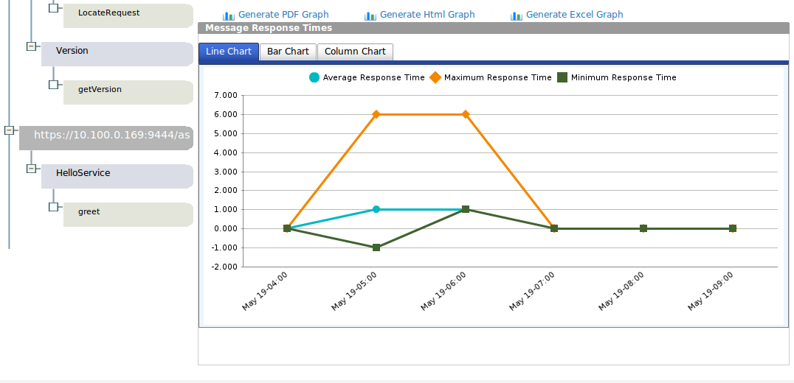
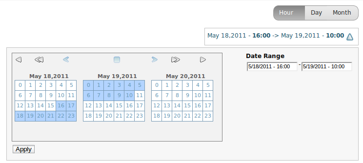

Service data and Mediation data dashboards display key operational data that are lightly summarized and updated as and when the latest data is available. For example, latest counts and time measures for both service and mediation data are available as operational dashboards.

These dashboards are organized in a tree structure.
For Server Data Dashboard, each server will consist of one or more services and each of these services will consist of a number of operations. For Mediation Data Dashboard, each server will consist a set of Endpoints, Proxy services, and Sequences. Each of these fields can be collapsed for easier viewing, using the toggles as shown in the above diagram.
The legend which expains the semantics of the colors can be moved if it covers the area that is being viewed. To move the legend, click on the legend and move the mouse cursor.
Click on the PDF and Excel icons to generate reports in Adobe PDF and MS Excel formats respectively.
Analytical decision making is a strategic weapon for companies. Analytics is the science of analysis. WSO2 BAM provides means to analyze the service and mediation data, summarized over time dimensions. Users can dig into information on the request, response, and fault counts as well as average time information for various levels of service invocations and mediation data, to help identify trends in the usage of services and message mediation patterns. These information can be used to help with strategic decision making in both IT and business domains. For example, IT can make use of analytics to help with capacity planning for the SOA infrastructure. Business decision makers can monitor the business trends and decide on what business functions to expand, and what steps to be taken to increase the percentage of successfully closed deals. In other words, business users can fine tune the business processes, based on the knowledge discovered.
The knowledge discovery facilitated by the visualization tools of WSO2 BAM help identify valid, novel, potentially useful and ultimately understandable patterns in data that are being collected.
The summarizations in the analytics dashboards are based on time dimensions. Both service data and mediation data are summarized into the following time dimensions:
Based on the above time dimensions, WSO2 BAM summarizes the collected data in the following manner.
Below is a sample analytics dashboard:

These dashboards are also organized in a collapsible tree structure as is the case for operational dashboards. The time range of analytics views can be selected from the calendar at the top right hand corner. Chart type of each of the analytics charts can be changed by clicking on the tab bar above them. Char type can be selected from one of either Line, Bar or Column.
Reports can be generated for each of the charts that are available by clicking on the PDF and Excel icons.

Click on the time range area to open the calendar. There are three different modes of time range selection: Hour, Day and Month. Click on the desired time range mode and select the time range from the calendar provided. Also it is possible to provide the date range directly into the Date Range text boxes. Then click Apply to apply the changes.